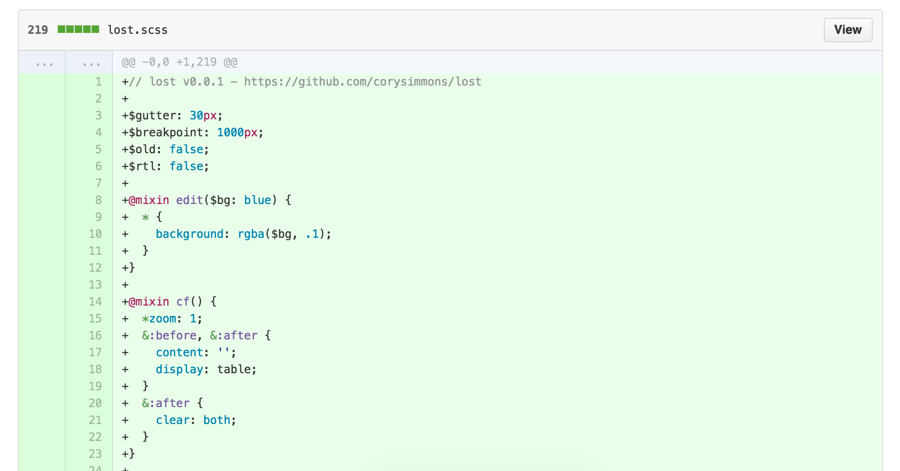
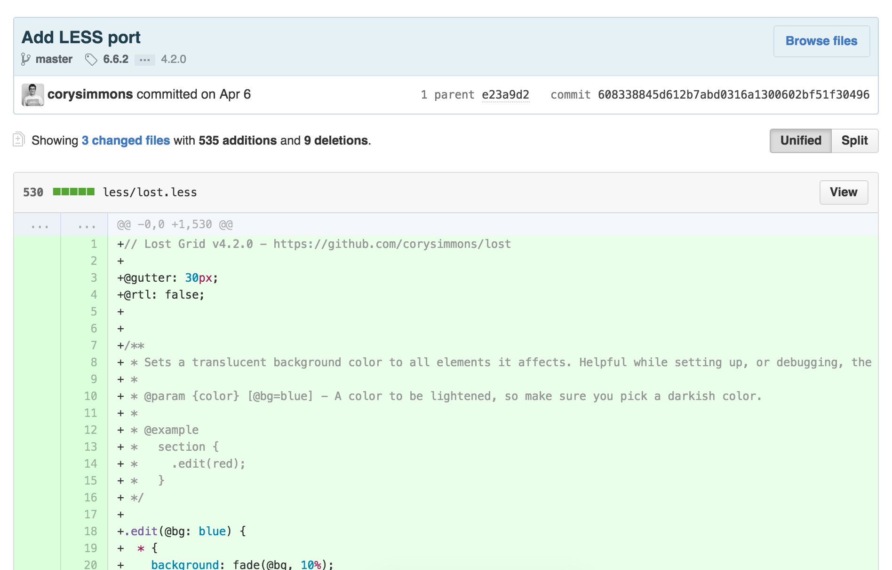
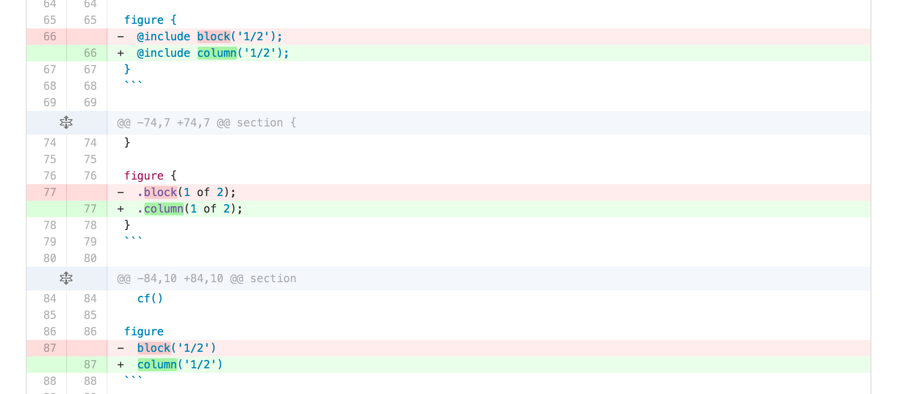
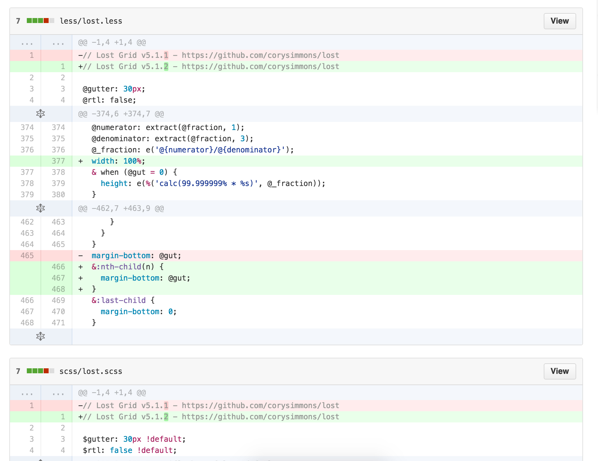

Why all my libraries will be written in PostCSS from now on and you should do the same.
Cory Simmons - @ccccory
Just so it would appeal to more people. But sometimes these conversions can be a lot of work. Not only is there a fundamental difference in syntax, but a lot of the functionality of the preprocessors is different.
Note: I did this Stylus + SCSS port thing with a few other open source libs I've worked on including Typographic.
Why not make my grid appeal to even more people?
This was a huge undertaking. By this point I had already added a few more functions to Lost and wasn't super familar with LESS' complicated (see: horrible) syntax.
Maintaining 3 codebases for the same library sucks...
Every single little change to the documentation had to be done 2 extra times.
My README was gargantuan...
Every... single... little... change...
It became really time consuming maintaining all these codebases.
This is a huge pain in the butt! Nothing made me more angry while working on Lost...
Say you want to make a mixin that does something kinda weird (but useful for frontend stuff) like create a typography mixin that needs to multiply exponents with decimals. Sass can't do this. You need to write some huge/crazy/slllllllow looping function just to accomplish this.
In fact, there are countless Sass libraries and random gists for basic math functionality.
Splitting strings is another problem I've ran into.
There were a few more I can't remember now, but it seemed like every time I turned around one of the 3 main preprocessors couldn't perform some basic task.
The official reason for not including functionality is because they want to keep their preprocessors bloat small. Which is understandable, but it also means it's a weaker tool than a fully fledged language like JavaScript for example.
I had heard of ReworkCSS, by God's gift to developers (and the ladies) TJ Huckchuck (GitHub), and was intrigued as to what it was. I read some article by frontend guru Nicolas Gallagher (Normalize, Micro Clearfix, SUITCSS) and didn't really understand any of it.
The only part that really jumped off the page was some example that seemed to illustrate that "You can make your own CSS properties: values".
I absolutely fell in love with the idea of having a column: 1/2; declaration.
I wanted to do this right so I explored my options.
At the time of that article's writing, Nicolas was almost exclusively using Rework (and I think they still might use it at Twitter?) so I don't think he mentioned PostCSS. I started looking around at Rework's GitHub activity and Issue tracker to see what the climate was like.
Buried within some issue I saw some people suggesting to use PostCSS. Then I saw it again. Then I did some research and discovered PostCSS was better maintained and saw some list of advantages it had on Rework. It also had a few developers going crazy developing plugins for it.
Not only that, but PostCSS was developed by the guy who made Autoprefixer (my favorite frontend tool). I was sold.
PostCSS is a JavaScript tool that you feed CSS into. It parses the CSS and gives you access to every single rule (.my-class), and every single property: value;. Once you have access to these, you can perform whatever JS functions you want to them and save it as a new CSS file.
As a super simple example, you can write a PostCSS plugin that will replace every instance of declaration bgc: white; with background-color: #ffffff;.
The downside(?): you use a task runner such a Gulp or Grunt (or any damn thing really, the plugin library for PostCSS is beyond amazing at this point). But if you're working on a big team, or you're an advanced little freelancer, you're probably already using a task runner for a plethora of frontend related tasks so this isn't really a problem.
This presentation isn't meant to teach you PostCSS's API. It's pretty complicated and you have to be pretty decent at JavaScript. But PostCSS has a very active Gitter.im channel and a lot of markdown documentation.
The community behind PostCSS is absolutely amazing. They will hold your hand every step of the way.
To start with, put a gulpfile.js and a package.json in the root of your project. Put {} in your package.json and save it. The Gulpfile is where you put JS related to running tasks, the package.json is where you store all the npm packages that go along with this particular project.
Run npm install --save-dev gulp gulp-sass. This will install some npm packages to node_modules and update your package.json. Once your team has a package.json to pass around, you'll only ever need to run npm install and it'll read/install everything in package.json.
Now add the following to your gulpfile.js:
var gulp = require('gulp'),
sass = require('gulp-sass');
gulp.task('sass', function() {
return gulp.src('src/css/**/*.*')
.pipe(sass())
.pipe(gulp.dest('dist/css/'));
});
gulp.watch('src/**/*.*', ['sass']);
gulp.task('default', ['sass']);
Run gulp through your terminal. It will parse all your src Sass files and convert them to CSS in your dist folder.
We'll use my grid system Lost because it's pretty friggin' sweet. #humblebrag
Run npm install --save-dev gulp-postcss lost.
var gulp = require('gulp'),
sass = require('gulp-sass'),
postcss = require('gulp-postcss'),
lost = require('lost');
gulp.task('sass', function() {
return gulp.src('src/css/**/*.*')
.pipe(sass())
.pipe(postcss([
lost()
]))
.pipe(gulp.dest('dist/css/'));
});
gulp.watch('src/**/*.*', ['sass']);
gulp.task('default', ['sass']);
Add lost-column: 1/2; to some rule.
If you take nothing else from this presentation, take this: a PostCSS library will work in LESS, Stylus, Sass, SCSS, vanilla CSS, and any other preprocessor that ever comes out.
Yes. Its creator, Andrey Sitnik, is too smart and too in love with this project for it not to be a huge success. He seems to work tirelessly making it better, adding more plugins, and marketing it.
"Oh, btw—Bootstrap 4 will be in SCSS. And if you care, v5 will likely be in PostCSS because holy crap that sounds cool."
— Mark Otto - Developer of Bootstrap
Shameless plug time!
You can find these slides at https://github.com/corysimmons/presentations